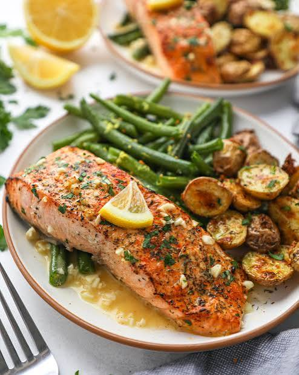

Odin Recipes
Home
Salmon

Description
This is salmon on a plate and usually I make it
with brocolli (or my wife makes it), with brocolli and
lovely sweet potatoe fries (and a drizzle of
mayo)
Ingredients
- Salmon
- Sweet Potatoe
- Brocolli
- Cook the Sweet Potatoes in microwave
- Put the salmon in the air fryer at 180/200 C for 12 mins
- Boil the brocolli for approximately 5 minutes
- Serve